| # | linux实用工具 | 详解 | 案例 |
|---|---|---|---|
| 1 | sftp | 用sftp链接linux | |
| 2 | nano | 编辑器 | |
| 3 | 多用户，多任务 | 多用户，多任务 | |
| 4 | 进程管理 | 进程管理 | |
| 5 | 安装mysql | 安装mysql |
$ dateMon
Apr 3 17:39:36 CST 2017
April 2017
Su Mo Tu We Th Fr Sa
1
2 3 4 5 6 7 8
9 10 11 12 13 14 15
16 17 18 19 20 21 22
23 24 25 26 27 28 29
30
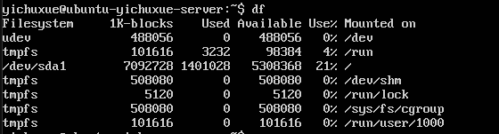
1.命令格式：
df [选项] [文件]
2.命令功能
显示指定磁盘文件可用空间。如果没有文件名被指定，则所有当前被挂在的文件系统的可用空间将被显示。默认情况下，磁盘空间将以1kb为单位进行显示，除非环境变量 POSIXLY_CORRECT 被指定，那样将以512字节为单位进行显示
以下可忽略
3.命令功能：
必要参数：
-a 全部文件系统列表
-h 方便阅读方式显示
-H 等于“-h”,但是计算式，1k=1000，而不是1k=1024
-i 显示inode信息
-k 区块为1024字节
-l 只显示本地文件系统
-m 区块为1048576字节
--no-sync 忽略 sync 命令
-P输出格式为POSIX
选择参数：
--block-size<区块大小> 指定区块大小
-t<文件系统类型> 只显示选定文件系统的磁盘信息
-x<文件系统类型> 不显示选定文件系统的磁盘信息
--help 显示帮助信息
--version 显示版本信息
查看详情
dev 设备
sd 统称一种存储设备
3个硬盘插口
sda
sdb
sdc
在linux下分区是以
sda1
sda2
sda3
use%硬盘使用百分比
挂载
设备连上了，连上了还看不到，由于没有一个具体的目录与它对应，那么我要把这个设备和一个具体的目录对应起来，这个过程就是挂载
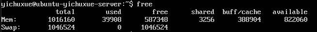
Mem 内存
Swap交换空间
当内存不够用的时候，会临时用硬盘来充当内存
快捷键ctrl+L
快速清空代码界面，相当于使用clear命令，windows上面是cls命令
查看当前目录
/home/yichuxue
切换当前目录至dirName
yichuxue$ubuntu-yichuxue-server:~$ pwd
yichuxue$ubuntu-yichuxue-server:~$ /home/yichuxue/test1
yichuxue$ubuntu-yichuxue-server:~/test1$ cd /home/yichuxue/test2
yichuxue$ubuntu-yichuxue-server:~/test2$
cd ..
返回上一级
yichuxue$ubuntu-yichuxue-server:~/test2$ cd ..
yichuxue$ubuntu-yichuxue-server:~$
~
代表当前根目录(/home/yichuxue) 如果在其他文件夹下面，可以直接用 cd ~跳转到/home/yichuxue
cd .
当前目录
-
表示前一个目录
注意事项：
在windows下面使用切换文件目录，需要跳盘符，在linux下面不需要，因为linux只有一个盘符就是/
dir
查看当前目录里面的文件和文件夹
ls
查看当前目录里面的文件和文件夹,h后面加-l显示目录的文件和文件夹的详细信息
例如：dir -l
例如：ls -l
ls -a
把所有的文件都输出来
d rwxr-xr-x 2 root root 4096 Apr 2 01:15 bin
类型 权限 链接 拥有者 组 大小 时间 名字
l link 链接
d directory 类型
- 普通文件
权限
rwx r-x r-x
拥有者权限 组权限 其他人权限
r 读权限
w 写权限
x 执行权
linux 是多用户，多任务操作系统
windows 是单用户，多任务
ll
和ls -a -l,ls -al 类似
ls -d b*
只查看以b开头的目录或文件，用-d限制只输出文件夹
查看当前文件或文件夹的属性
file bin
bin:directory 为文件目录
mkdir
创建一个目录或者文件夹 mkdir [filename]
rmdir [filename]
只能删除文件夹
rm [filename]
只能删除文件 rm [filename],rm [filename] [filename]
rm *
删除全部文件
rmdir *
删除全部文件夹
rm -ri [filename]
-r递归删除文件，删除到最后把文件夹删除 -i每次删除的时候会提示你是否删除
> empty.txt
touch empty1.txt
touch的意思是更新文件，并不是创建文件，但是更新一个不存在的文件，就会创建一个文件
echo > empty2.txt
echo创建文件的原理是重定向到一个文件里面去，就可以创建一个文件了
创建文件的三种方式
echo 'i am yichuxue' > yichuxue.txt
输出重定向，意思是将i am yichuxue 放在yichuxue.txt这个文本目录里面，但是会覆盖里面的内容，如果是两个>>则是追加
cat [filename]
查看文件里面的内容
利用touch生成a到z的文件
yichuxue@ubuntu-yichuxue-server:~$ touch {a..z}.txt
会自动生成a到z的txt文件
mv [filename] [文件夹]
将一个文件复制到一个文件夹里面
cp
复制文件 cp [filename] [filename] 把一个文件拷贝成另一个文件
less
yichuxue@ubuntu-yichuxue-server:/etc$ less group
help|--help|man
都是查看属性的帮助信息，但是help只能查看linux自带的属性，--help可以查看其它已经安装的软件的命令信息，man可以滚动
q
当进入文件里面，或者用help查看帮助文档，如果要退出来，按q键
cat
yichuxue@ubuntu-yichuxue-server:~$ cat a.txt b.txt
cat除了可以输出文件之外，还可以写文件
yichuxue@ubuntu-yichuxue-server:~$ cat > test.py
print('boy')
print('girl')
yichuxue@ubuntu-yichuxue-server:~$ python3 test.py
boy
girl
cat命令复制文件
yichuxue@ubuntu-yichuxue-server:~$ cat a.txt > b.txt
将文件a.txt 复制到 b.txt
grep
yichuxue@ubuntu-yichuxue-server:/etc$ grep systemd group
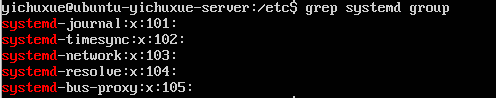
| 管道操作符
yichuxue@ubuntu-yichuxue-server:/etc$ cat group | less
将cat group的输出变成less的输出
*
yichuxue@ubuntu-yichuxue-server:/etc$ rm *
删除当前文件夹里面的所有文件
yichuxue@ubuntu-yichuxue-server:/etc$ ls -l *.conf
找到etc目录下的所有以.conf的文件
locate
yichuxue@ubuntu-yichuxue-server:~$ locate /to_search/a.txt
在整个目录里面查找to_search/a/txt 文件
注意事项：
如果你的文件和文件夹是刚刚新建的，那么你是搜索不到的，因为locate搜索的是linux里面的数据库，
但是这个数据库是一天更新一次，所以你现在创建的文件夹是搜索不到的，那么我们要让他搜索到就需要
更新数据库,例如：
yichuxue@ubuntu-yichuxue-server:~$ sudo updatedb //更新数据局
[sudo] password for yichuxue: //输入你的账号密码
yichuxue@ubuntu-yichuxue-server:~$ locate to_search
sudo
另外sudo命令用来以其他身份来执行命令，预设的身份为root。在/etc/sudoers中设置了可执行sudo
指令的用户。若其未经授权的用户企图使用sudo，则会发出警告的邮件给管理员。用户使用sudo时，
必须先输入密码，之后有5分钟的有效期限，超过期限则必须重新输入密码。
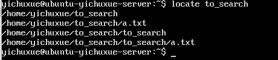
归档文件
yichuxue@ubuntu-yichuxue-server:~$ mkdir to_archive 创建一个to_archive文件夹
yichuxue@ubuntu-yichuxue-server:~$ touch to_archive/{a..z}.txt 创建a到z的txt文件
yichuxue@ubuntu-yichuxue-server:~$ tar cf to_archive.tar to_archive
tar打包方式 cf打包 to_archive.tar打包之后输出格式 to_archive打包的文件
查看打包文件
yichuxue@ubuntu-yichuxue-server:~$ tar tvf to_archive.tar
tar文件格式 tf文件信息 tvf文件详细信息 to_archive.tar被打包的文件
释放文件
yichuxue@ubuntu-yichuxue-server:~$ mkdir new
yichuxue@ubuntu-yichuxue-server:~$ cd new
yichuxue@ubuntu-yichuxue-server:~/new$ tar xf ../to_archive.tar
在释放文件的时候，需要新建一个文件夹，然后进入文件里面释放，不然会把现有文件相同的覆盖
压缩文件
yichuxue@ubuntu-yichuxue-server:~to_archive$ ls
a.txt b.txt c.txt ... z.txt
yichuxue@ubuntu-yichuxue-server:~$ gzip a.txt
a.txt.gz b.txt c.txt d.txt ... z.txt
解压
yichuxue@ubuntu-yichuxue-server:~$ gunzip a.txt.gz
a.txt b.txt c.txt ... z.txt
压缩不删除源文件
yichuxue@ubuntu-yichuxue-server:~$ gzip -k a.txt
a.txt.gz a.txt b.txt c.txt d.txt ... z.txt
apt
yichuxue@ubuntu-yichuxue-server:/etc$ sudo apt pip
安装pip
查看包
yichuxue@ubuntu-yichuxue-server:/etc$ sudo apt list | grep python | less
yichuxue@ubuntu-yichuxue-server:/etc$ sudo apt install openssh-server 安装
yichuxue@ubuntu-yichuxue-server:/etc$ sudo service sshd restart 重启ssh服务
yichuxue@ubuntu-yichuxue-server:/etc$ ip a 查看ip
VirtualBox端口转发
第一步：
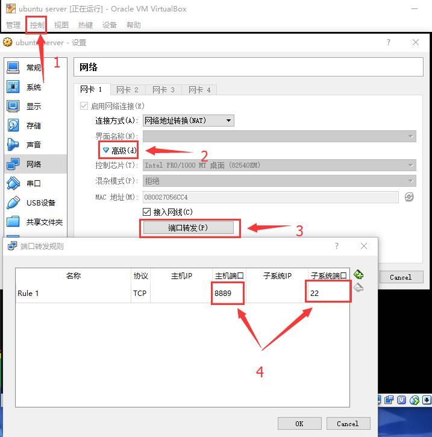
第二步：
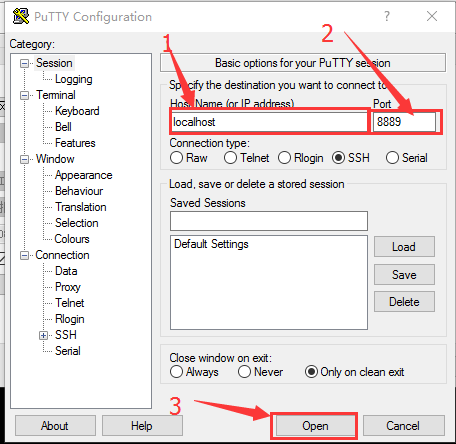
第三步：
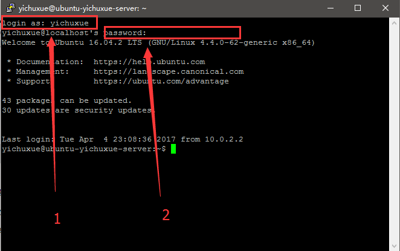
完成
VM端口转发
C:ProgramData\VMware下面有一个配置文件，vmnetnat.conf
然后用管理员权限打开编辑器，并用编辑器打开vmnetnat.conf
然后找到ssh,找到[incomingtcp],
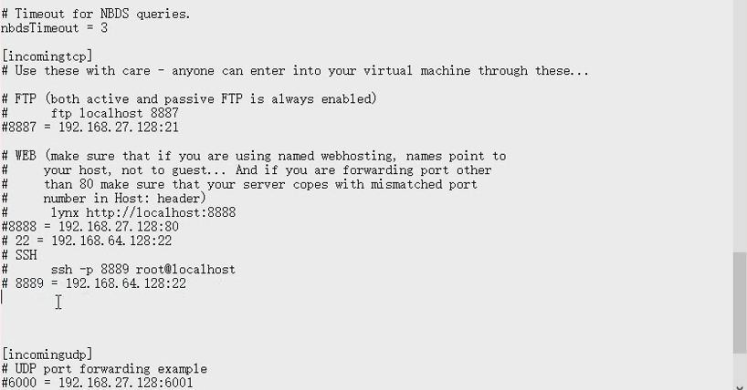
然后在[incomingtcp]下面最后一行加上2222 = 192.168.64.128:22
然后在电脑上的服务里面，关闭然后在打开VMware NAT Service
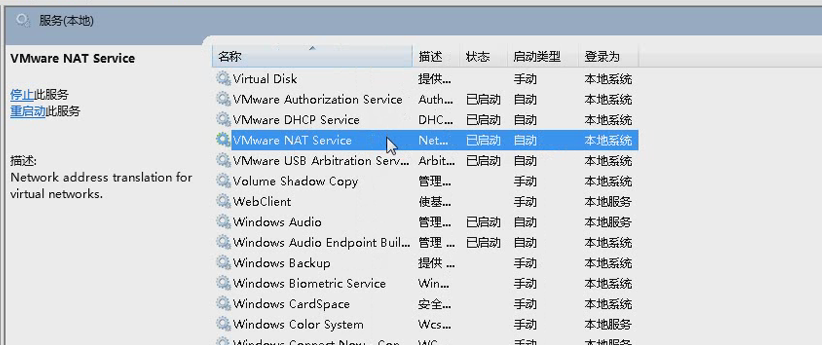
使用桥接模式来实行
桥接模式下
yichuxue@ubuntu-yichuxue-server:/etc$ ip a
会输出电脑的ip地址，然后用其他电脑ping一下，可以被ping到
nat模式下不会被ping到
但是在自己的电脑上可以ping到虚拟机，并且也可以用他的ip连上ssh
有个问题就是在其他电脑上ping不到，那么其他机子也连不上ssh
ln -s
yichuxue@ubuntu-yichuxue-server:~/to_link$ ln -s ~/to_link/target ../my_link
ln -s创建一个快捷方式 ~/to_link/target快捷方式的文件或文件夹 ../my_link快捷方式的地址
sftp
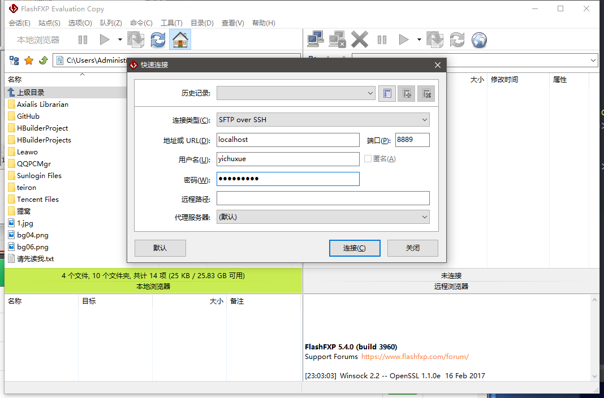
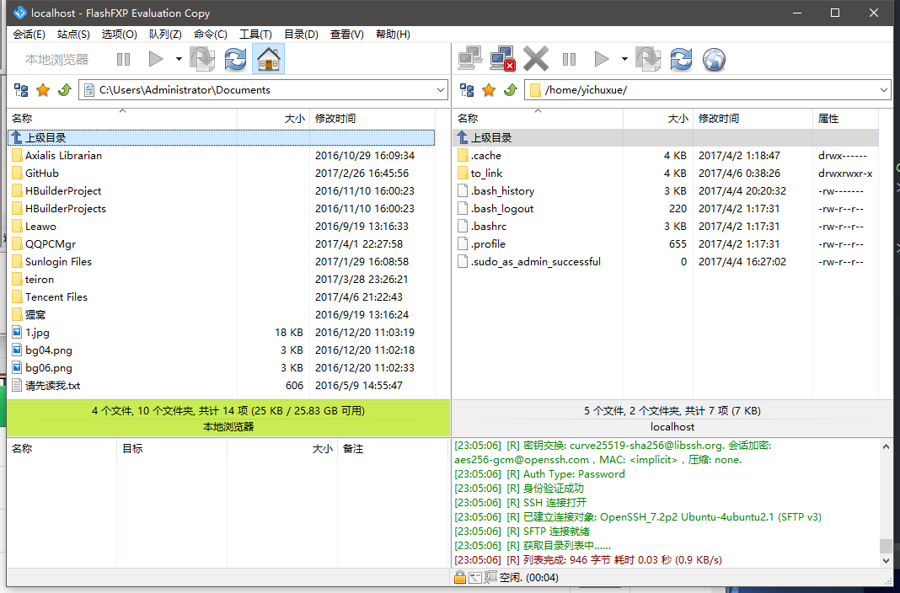
域名和网址的区别
网址
www.baidu.com
map.baidu.com
www.qq.com
www.163.com
域名
baidu.com
qq.com
163.com
nano
^代表ctrl键
M代表alt键
用nano编辑器写一个99乘法表
#! /usr/bin/env python3
# coding: utf-8
for i in range(1, 10):
for j in range(1, 10):
if i<=j:
print('%d*%d=%2d'%(i,j,i*j),end=' ')
print()
nano快捷键
^C Write Out 保存当前编辑的信息
^W Where Is 搜索
^K Cut Text 剪切一行
^U 粘贴
Alt+U 撤销
^R 插入一个文件
多任务
先写一个死循环
#! /usr/bin/env python3
# coding: utf-8
import time
while True:
print('haha')
time.sleep(2)
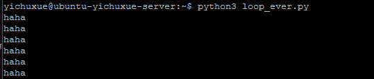
当死循环执行开始之后，要让他停下来有三种方法
1.直接关电源
2.ctrl+c 键盘打断，用一个键盘发一个异常
3.ctrl+z 讲脚本停下来
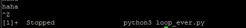
恢复脚本
yichuxue@ubutun-yichuxue-server:~$ fg %1
fg是恢复的意思 %1 百分号后面跟着的是脚本的序列
jobs 查看所有运行的任务
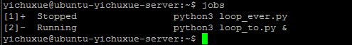
bg 后台运行
yichuxue@ubutun-yichuxue-server:~$ bg %2
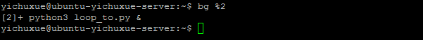
最后面的&符号 表示它在后台运行
如果要停止一个后台程序，要先把他调到前台，然后再关闭
yichuxue@ubutun-yichuxue-server:~$ fg %2
然后ctrl+c
我们还可以直接执行脚本的时候丢到后台
yichuxue@ubutun-yichuxue-server:~$ python3 link_to.py &
进程管理
一个进程里面可以有多个线程
查看所有进程
yichuxue@ubutun-yichuxue-server:~$ top
查看此时此刻正在运行的进程
yichuxue@ubutun-yichuxue-server:~$ ps
查看所有此时此刻正在运行的进程
yichuxue@ubutun-yichuxue-server:~$ ps ax
查看完整的信息，并且可以滚动
yichuxue@ubutun-yichuxue-server:~$ ps ax | less
杀进程
yichuxue@ubutun-yichuxue-server:~$ fg %1
安装mysql
yichuxue@ubutun-yichuxue-server:~$ sudo apt install mysql-server
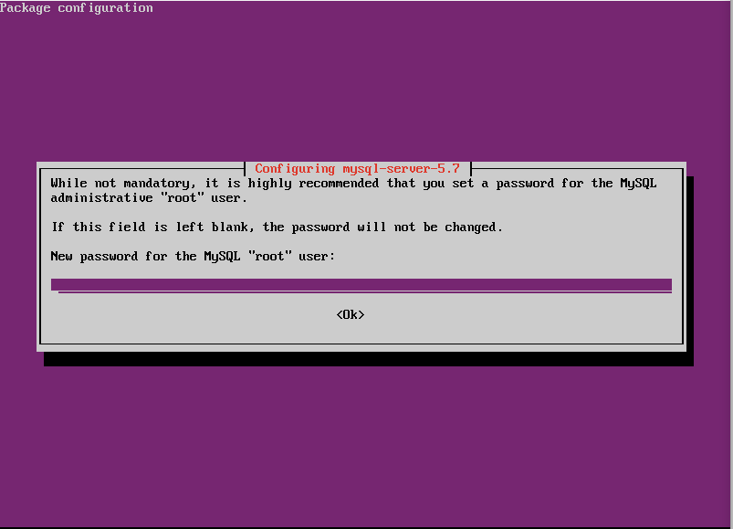
请输入密码，一定要输入密码，不然你的密码是随机的
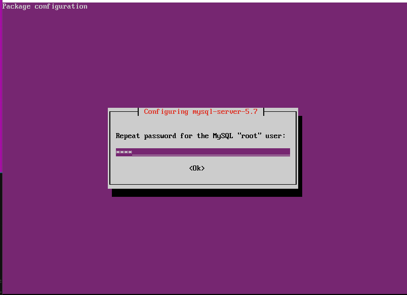
再次输入密码
测试自己的mysql是否安装成功
yichuxue@ubutun-yichuxue-server:~$ mysql -uroot -padmin
mysql 数据库 -u指定用户 root表示root用户 -p指定密码 admin数据库密码
调出mysql的编码集或字符集
yichuxue@ubutun-yichuxue-server:~$ SHOW VARIABLES LIKE '%char%';
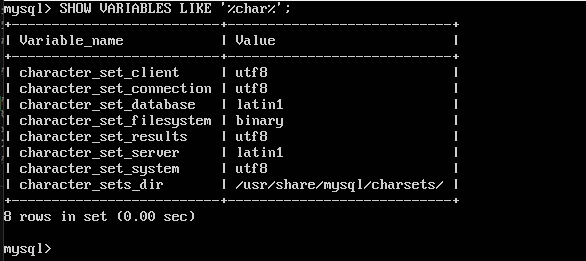
显示环境变量
yichuxue@ubutun-yichuxue-server:~$ SHOW VARIABLES LIKE '%colla%';
SHOW显示 VARIABLES环境变量 LIKE %%所有字符 所有包含colla的字符
在修改之前要把他的服务给关掉，先跳转到/etc/mysql/下面
yichuxue@ubutun-yichuxue-server:~$ sudo service mysql stop
停止mysql服务， service服务 指定mysql 让他停止
查看mysql是否被关闭
yichuxue@ubutun-yichuxue-server:~$ sudo service mysql status
如果最前面的那个点是灰色的，代表被关闭了，如果是绿色的代表是开着的
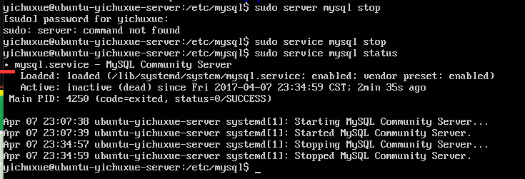
然后修改配置文件
yichuxue@ubutun-yichuxue-server:~$ sudo nano my.cnf
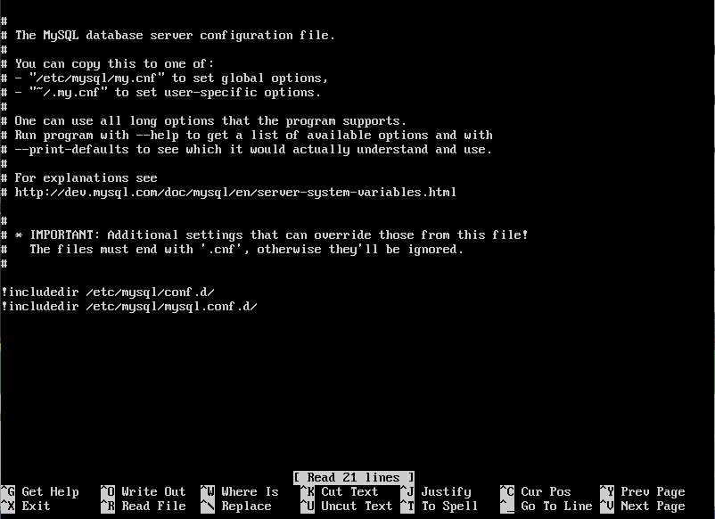
然后添加配置
[client]
default-character-set = utf-8
[mysqld]
character-set-server = utf8
collation-server = utf8_general_ci
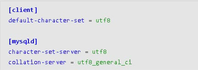
添加完配置之后，保存退出，然后启动服务
yichuxue@ubutun-yichuxue-server:~$ sudo service mysql start
然后在进入mysql
yichuxue@ubutun-yichuxue-server:~$ mysql -uroot -padmin
进入之后再来查看mysql的状态
yichuxue@ubutun-yichuxue-server:~$ SHOW VARIABLES LIKE '%char%';
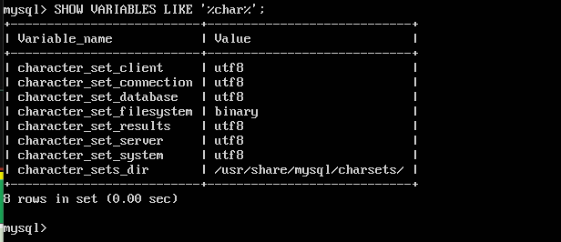
yichuxue@ubutun-yichuxue-server:~$ SHOW VARIABLES LIKE '%colla%';
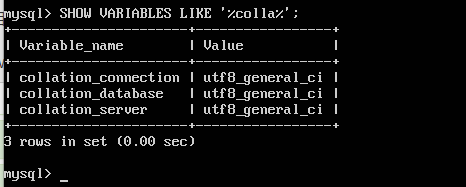
symbolic 是一个快捷方式
| # | mysql常用命令 | 详解 | 案例 |
|---|---|---|---|
| 1 | SHOW DATABASES; | 查看有哪些数据库的信息 | |
| 2 | DROP DATABASE 'DB2'; | 删除数据库，引号里面显示被删除的数据库 | |
| 3 | USE 'DB2'; | 使用数据库 | |
| 4 | 数据库常用命令 | 数据库常用命令 | |
| 5 | 数据库客户端登录 | 数据库客户端登录 |
SHOW DATABASES;
yichuxue@ubutun-yichuxue-server:~$ mysql -uroot -padmin
mysql> SHOW DATABASES;
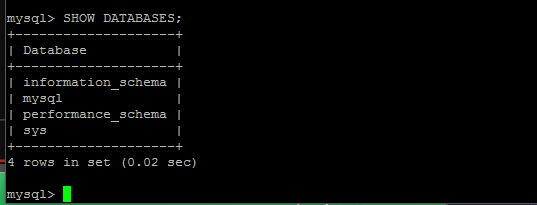
DROP DATABASE 'DB2';
yichuxue@ubutun-yichuxue-server:~$ mysql -uroot -padmin
mysql> DROP DATABASE 'DB2';
USE 'DB2';
yichuxue@ubutun-yichuxue-server:~$ mysql -uroot -padmin
进入数据库
mysql> DROP DATABASE 'DB2';
停止数据库 'DB2'
mysql> USE 'django';
使用数据库 'django'
mysql> SELECT DATABASE();
查看当前所在数据库
mysql> SHOW TABLES;
查看当前数据库里面的表
数据库常用命令
显示所有数据库
mysql> SHOW DATABSES;
选择数据库
mysql> use '数据库名'
显示数据库中的表
mysql> SHOW TABLES;
显示数据表的结构
mysql> DESCRIBE '表的名字';
显示表中的记录
mysql> SELECT * FROM
建库
mysql> CREATE DATABASE 库名字;
删库
mysql> DROP DATABASE 库名字;
删除表
mysql> DROP TABLES 'teacher';
创建表
mysql> CREATE TABLE 'django'.'teacher';
数据库客户端登录
首先查看数据库服务是否启动
yichuxue@ubutun-yichuxue-server:~$ sudo service mysql status
停止数据库的服务器
yichuxue@ubutun-yichuxue-server:~$ sudo service mysql stop
启动数据库的服务器
yichuxue@ubutun-yichuxue-server:~$ sudo service mysql start
登录mysql
yichuxue@ubutun-yichuxue-server:~$ mysql -hlocalhost -P3306 -uroot -padmin
-h服务器地址 -P端口号 -u用户 -p密码
yichuxue@ubutun-yichuxue-server:~$ mysql --host=localhost --post=3306 --user=root --password=admin
*数据库里面的退出是 q和ctrl+c和exit
*在linux里面登录数据库可以不输入账号，只输入密码
yichuxue@ubutun-yichuxue-server:~$ mysql -p
Enter password:
当你不输入账号，只输入密码登录mysql的时候，他的默认账号是你的linux的用户名。例如我现在的就是yichuxue
查看自己的当前linux账户
yichuxue@ubutun-yichuxue-server:~$ echo $USER